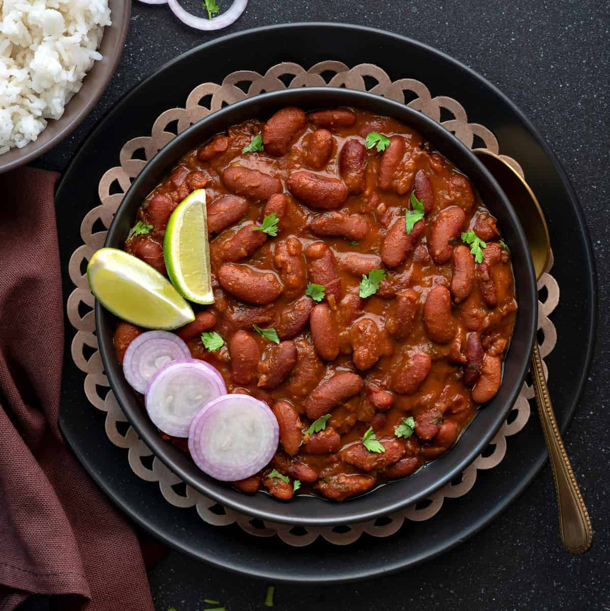

Rajma

Rajma is a popular North Indian dish made with red kidney beans cooked in a thick and flavorful tomato-based gravy. It is often served with steamed rice and is a staple comfort food in many Indian households.
Ingredients:
- Red kidney beans
- Tomatoes
- Onions
- Garlic
- Ginger
- Spices (cumin, coriander, turmeric, chili powder)
Steps:
- Soak the red kidney beans in water for 2-3 hours.
- Boil the soaked beans until they are tender.
- Heat oil in a pan and add chopped onions. Cook until golden brown.
- Add minced garlic and ginger. Cook for a minute.
- Add chopped tomatoes and cook until they soften.
- Add the cooked beans and mix well.
- Add the required spices and cook for 5-10 minutes.
- Serve hot with steamed rice.
Home